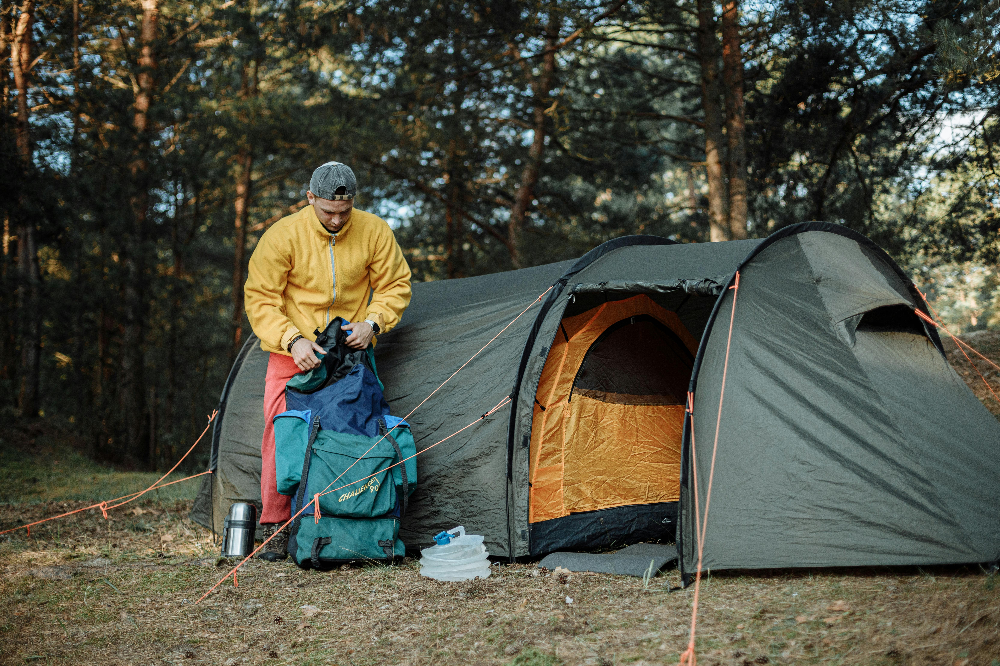
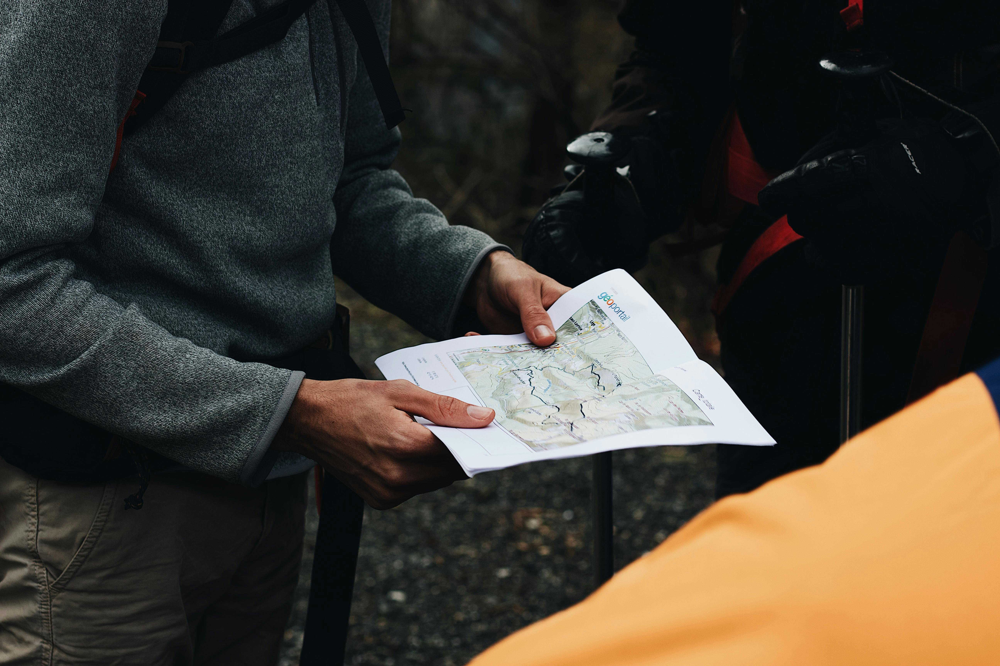

Essential Travel Tips for a Smooth Journey
Planning a trip can be overwhelming, but with the right
tips, you can ensure a smooth and enjoyable journey.
Whether you're a first-time traveler or a seasoned
globetrotter, these tips will help you navigate your
next adventure with ease.
-
Pack Smart – Stick to a packing list and
avoid overpacking. Use packing cubes for
organization and remember to pack essentials like a
first-aid kit and travel adapters.
-
Stay Safe – Always keep your valuables in a
secure place, and make sure to have copies of
important documents like your passport and insurance
details.
-
Travel Light – Carry only what you need, and
try to pack in carry-on luggage to avoid delays at
the airport.
-
Cultural Awareness – Learn about the customs
and traditions of the places you're visiting to show
respect and enhance your experience.
By following these tips, you'll be better prepared for
any situation that arises while traveling. Whether it's
a long-haul flight or a short weekend trip, these simple
steps can make all the difference.

